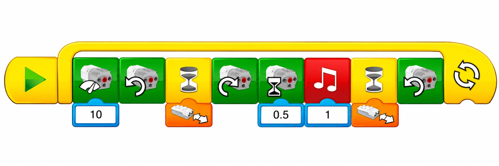

Οδηγίες συναρμολόγησης
Αναλυτικές οδηγίες συναρμολόγησης του Έξυπνου Κάδου σε 33 σελίδες. Το PDF ανοίγει με τον κωδικό πρόσβασης που έχει δοθεί στους μαθητές.
 PDF 33 ΣΕΛΙΔΕΣ
Έξυπνος ΚάδοςΟδηγίες κατασκευής · Άνοιγμα PDF
Άνοιγμα PDF ↗
PDF 33 ΣΕΛΙΔΕΣ
Έξυπνος ΚάδοςΟδηγίες κατασκευής · Άνοιγμα PDF
Άνοιγμα PDF ↗Κατασκευάζουμε έναν τροχοφόρο Έξυπνο Κάδο με LEGO WeDo 2.0 και ανακαλύπτουμε πώς ο κινητήρας, ο αισθητήρας κίνησης, οι χρονισμένες εντολές και ο ήχος συνεργάζονται σε ένα πρόγραμμα που επαναλαμβάνεται.
Η αποστολή μας είναι να φτιάξουμε έναν τροχοφόρο κάδο που συνδυάζει μηχανική κατασκευή και προγραμματισμό. Ακολουθώντας τις οδηγίες συναρμολογούμε το πλαίσιο, τους τέσσερις τροχούς, τα γρανάζια, τη μετάδοση κίνησης με ιμάντα και το σώμα του μοντέλου με τα χαρακτηριστικά του μάτια. Στη συνέχεια συνδέουμε τον κινητήρα και χρησιμοποιούμε μια ακολουθία LEGO WeDo 2.0. Ορίζουμε ισχύ 10 και συγκεκριμένη φορά περιστροφής, περιμένουμε συνθήκη από τον αισθητήρα κίνησης, αλλάζουμε τη φορά του κινητήρα, ενεργοποιούμε χρονισμένη κίνηση 0,5 δευτερολέπτου και αναπαράγουμε ήχο. Με νέα αναμονή από τον αισθητήρα και μια ακόμη αλλαγή φοράς, ο κύκλος επαναλαμβάνεται. Στόχος μας είναι να εξηγήσουμε πώς οι εντολές γίνονται κινήσεις και αντιδράσεις ενός πραγματικού ρομποτικού μοντέλου.
Το πρόγραμμα ξεκινά με το «Ξεκίνημα» και περιλαμβάνει έναν βρόχο «Επανάληψη». Ορίζει ισχύ 10, δίνει κίνηση προς τα αριστερά και περιμένει τη συνθήκη «Μη αλλαγή απόστασης» από τον αισθητήρα κίνησης. Στη συνέχεια αλλάζει τη φορά προς τα δεξιά, ενεργοποιεί χρονισμένη κίνηση 0,5 δευτερολέπτου και παίζει ήχο με τιμή 1. Ακολουθεί δεύτερη αναμονή με την ίδια συνθήκη αισθητήρα, νέα εντολή κίνησης προς τα αριστερά και επανάληψη της ακολουθίας.

Οδηγίες κατασκευής και πληροφορίες βίντεο παρουσίασης.
Αναλυτικές οδηγίες συναρμολόγησης του Έξυπνου Κάδου σε 33 σελίδες. Το PDF ανοίγει με τον κωδικό πρόσβασης που έχει δοθεί στους μαθητές.
PDF 33 ΣΕΛΙΔΕΣ
Έξυπνος ΚάδοςΟδηγίες κατασκευής · Άνοιγμα PDF
Άνοιγμα PDF ↗Το βίντεο παρουσίασης θα προστεθεί αργότερα.